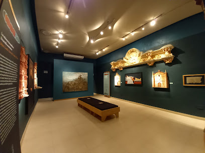

Arroyo seco
Historia
Arroyo Seco es un pequeño pueblo ubicado en el estado de Querétaro, México. Este pintoresco lugar tiene una rica historia que se remonta a la época prehispánica y ha evolucionado significativamente a lo largo de los siglos. Aquí te presento un resumen de la historia de Arroyo Seco:
Época Prehispánica Antes de la llegada de los españoles, la región donde se encuentra Arroyo Seco estaba habitada por diversas culturas indígenas, como los pames y jonaces, quienes eran conocidos por su resistencia ante la conquista española. Estos grupos se dedicaban a la agricultura, la caza y la recolección. Conquista y Colonia Durante la conquista española, la región fue explorada y eventualmente colonizada. Los españoles introdujeron nuevas formas de organización social y económica, incluyendo la ganadería y la agricultura intensiva. Se fundaron haciendas y misiones para evangelizar a los indígenas y explotar los recursos de la región. Siglo XIX En el siglo XIX, durante la Guerra de Independencia de México, la región de Querétaro, incluyendo Arroyo Seco, jugó un papel importante como escenario de varios enfrentamientos entre las fuerzas insurgentes y las tropas realistas. Después de la independencia, la región experimentó un lento pero constante desarrollo económico y social. Siglo XX El siglo XX trajo consigo importantes cambios para Arroyo Seco. Con la Revolución Mexicana, se llevaron a cabo reformas agrarias que redistribuyeron tierras y mejoraron las condiciones de vida de muchos habitantes rurales. En esta época, el pueblo comenzó a modernizarse con la introducción de servicios básicos como la electricidad y el agua potable. Patrimonio y Cultura Arroyo Seco es conocido por sus bellezas naturales y su patrimonio cultural. Uno de los tesoros más destacados de la región son las pinturas rupestres que datan de miles de años, ubicadas en la Sierra Gorda. Estas pinturas son testimonio de las antiguas culturas que habitaron la zona y han sido declaradas Patrimonio Mundial por la UNESCO. Actualidad Hoy en día, Arroyo Seco es un destino turístico popular, especialmente para aquellos interesados en el ecoturismo y la historia. Sus paisajes naturales, junto con su patrimonio histórico y cultural, atraen a visitantes de todo el mundo. El pueblo ha logrado conservar su encanto tradicional mientras se adapta a las necesidades modernas, lo que lo convierte en un ejemplo de desarrollo sostenible.Atractivos Principales
Misión de Jalpan
La Misión de Santiago de Jalpan es un conjunto arquitectónico mexicano ubicado en Jalpan de Serra, Querétaro. Está integrado por un convento y una iglesia, construidas en estilo churrigueresco por la orden Franciscana en el siglo XVIII. La Misión se encuentra en el centro de la ciudad de Jalpan y desde 2003 es considerada Patrimonio de la Humanidad por la Unesco como parte de las Misiones franciscanas de la Sierra Gorda de Querétaro.

Presa jalpan
La Presa de Jalpan se localiza en la parte central de la Reserva de la Biósfera Sierra Gorda, en el estado de Querétaro. El 2 de febrero de 2004 se designó como Humedal de Importancia Internacional. Desde su asignación como el sitio Ramsar número 1352, la presa fue reconocida como refugio de un número importante de aves migratorias, así como de especies residentes.

Museo historico de la sierra Gorda
Fue inaugurado el 9 de agosto de 1991 en el edificio construido sobre el presidio militar o fuerte, edificado en 1576 por órdenes del Virrey Martín Enríquez de Almanza y reconstruido a finales del mismo siglo por Luis Carbajal y de la Cueva. Su creación hizo realidad las aspiraciones de los estudiosos de la riqueza cultural de la Sierra Gorda y, de manera especial, de las comunidades mismas que habitan ese privilegiado territorio del noroeste queretano. El Museo Histórico ofrece una síntesis objetivada de los acontecimientos más significativos ocurridos en esa región queretana y zonas de los estados colindantes, desde la prehistoria hasta el siglo actual. Mediante el arte y las técnicas de la museografía moderna, a través de una rica variedad de grabados y objetos antiguos y contemporáneos, el museo ofrece un panorama de la acción transformadora de los diversos grupos humanos que han poblado la Sierra Gorda desde los tiempos más remotos hasta nuestro siglo, entre ellos el de los "Pames": pobladores más antiguos que han sobrevivido hasta nuestros días en algunas comunidades de Tancoyol y en el mestizaje de la población mayoritaria de la Sierra Gorda. La última sala, de carácter etnográfico, es un homenaje a esa sobrevivencia.
Cultura
La cultura jalpense es vibrante y llena de vida. Durante todo el año, el pueblo celebra diversas fiestas y eventos que reflejan sus ricas tradiciones. La Feria de Jalpan, celebrada en marzo, es un evento imperdible donde la música, la danza y la gastronomía local se combinan para crear una fiesta inolvidable. Los mercados locales están llenos de artesanías únicas, como textiles y cerámicas, que son el reflejo del talento y la creatividad de los artesanos de la región.
Gastronomía
Y hablando de gastronomía, no puedes dejar Jalpan de Serra sin probar sus delicias culinarias. Desde los tradicionales tacos de cecina hasta las enchiladas serranas, cada bocado es una explosión de sabor que te hará querer más. No olvides acompañar tus comidas con un refrescante agua de sabor o un mezcal artesanal de la región.